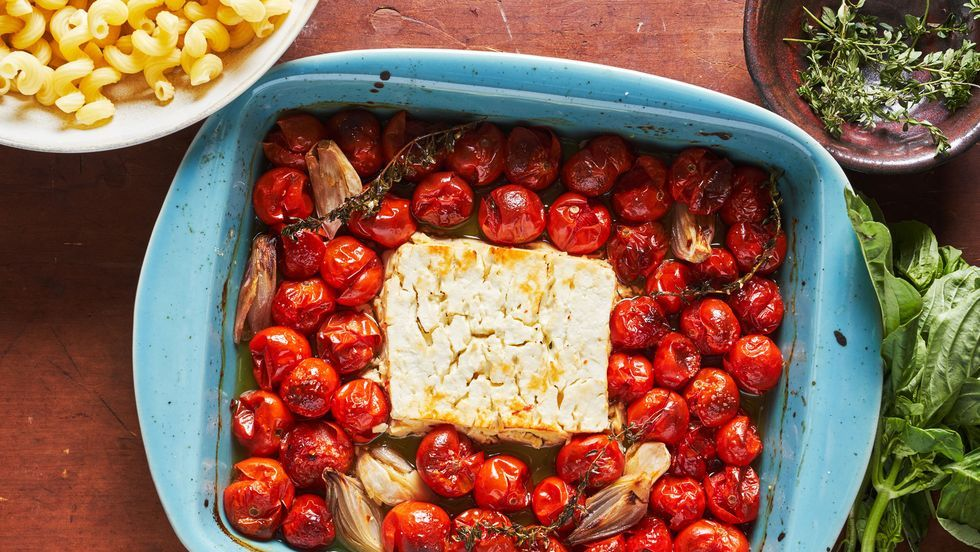

Feta Pasta Recipe

Description
Feta pasta is a hearty dish made with roasted tomatoes, creamy lightly tangy feta, al dente pasta, and fresh spinach and herbs.
Ingredients
- 2 pints of cherry tomatoes
- 1/2 cup of extra - virgin olive oil
- Kosher salt and freshly ground black pepper/li>
- 10 ounces mezze rigatoni
Cooking steps
- Pre heat the oven to 400 degrees F
- Toss the cherry tomatoes in a bowl
- Add pasta to salted boiling water
- Smash tomatoes and feta together